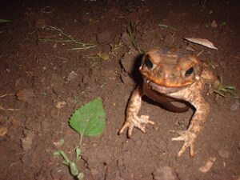

abeleng 
/ʔabɔlɔŋ/
v_rt.
“to_swallow”
v.
for a person or animal (eg-abeleng, mig-abeleng/in-abeleng, abeleng, agent, eg><ø-) to swallow something (eg-abelengen, in-abeleng/mig-abeleng/pig-abeleng, abelenga, patient, eg><en-)
Ka eg-abeleng iyan ka pegpaseled te minsan nekey puun te be-bè pabayè te abelangan peendiyè te getek. Egkeyimu sika te minsan nekey ne malenggew wey se kenè.
Kenè ka eg-abeleng te behas te santul su egkabekeg ka.
Don't swallow santol seeds because you will choke.
Nabekeg a dengan te santul su in-abeleng ku ka behas.
I was choke of santol seed because I swallow it.
Eng. swallow
Tag. lunók; lulón
Ceb. tulon
Ilo.: tilmúnen
OCM: Eating (264), Ethnophysiology (827)
Online dict status: -
Usage level: M
n.
(abelengan, -an) throat
Mania te eglehes ka abelengan te batè?
Why is the throat of the child noisy?
Iyan an-anayan ne egbayaan te keenen ka abelengan.
The first way to food is throat.
Eng. throat; esophagus
Tag. lalamúnan
Ceb. tutunlan
Ilo.: karábukób
OCM: Ethnoanatomy (826)
DDP: Mouth (2.1.1.4), Internal organs (2.1.8)
Online dict status: -
Usage level: M
v.
for someone (egpan-abeleng, migpan-abeleng/impan-abeleng, agent, eg><ø-paN-) to keep on swallowing something (egpan-abelengen, impan-abeleng/migpan-abeleng/pigpan-abeleng, patient, eg><en-paN-)
Eng. keep on swallowing something
Online dict status: -
Usage level: M
Updated by: RJH,AAA,TME,RJH,TME,QDL,NJK,QDL,RAA
Last updated: 27/Jun/2018
"abelengan" in healthbook "Egbuween wey egnguwehen si Lukas"
"abelengan" in healthbook "Egbuween wey egnguwehen si Lukas"
"abelengan" in healthbook "Egbuween wey egnguwehen si Lukas"
"abelengan" in healthbook "Egbuween wey egnguwehen si Lukas"
"abelengan" in healthbook "Nabekeg si Junjun teg keenen"
This page last updated: 28-Dec-2019
Copyright © 2009-2014, Matigsalug Language Christian Association, Inc